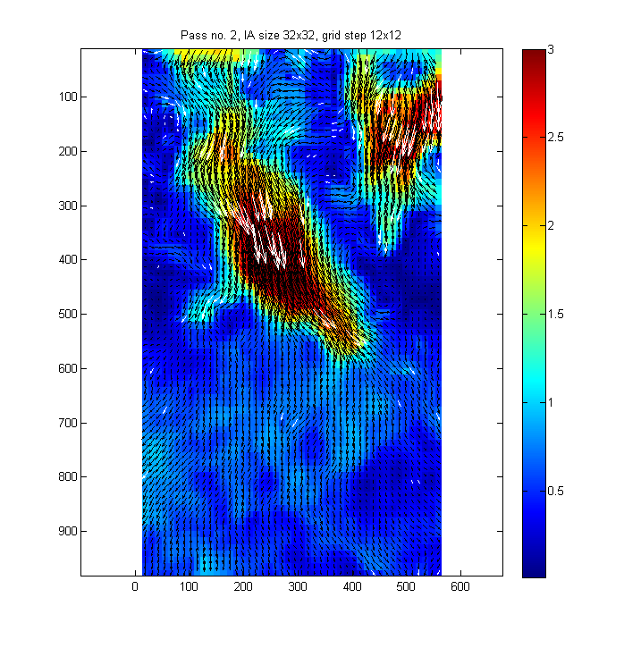
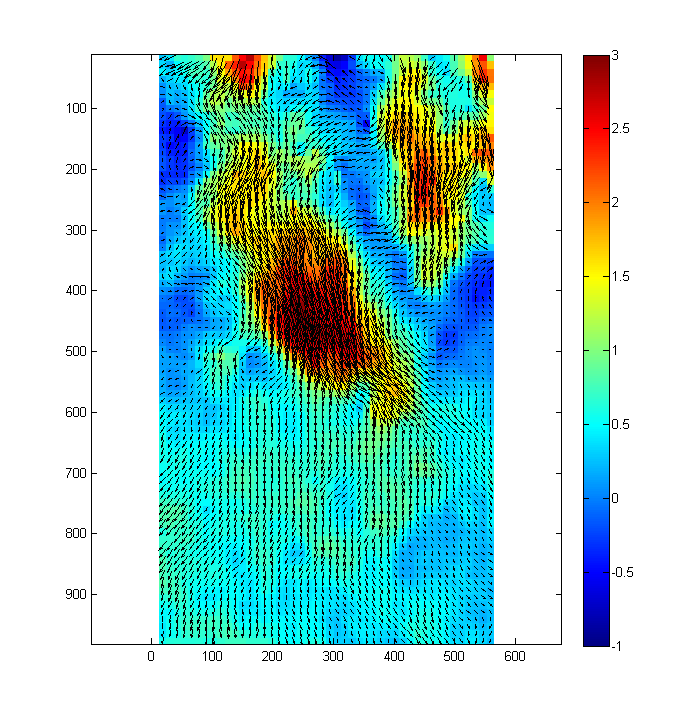
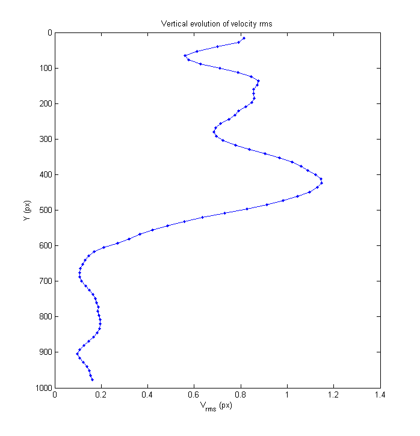

Example 06 - Standard treatment of image sequence
This example demonstrates the standard way of treatment of a sequence of PIV images. The result of treatment is saved in a folder after processing each image pair. Before treatment of an image pair, the presence of result file is checked and the PIV analysis is carried out only if this file does not exist. If the file with results exists, the processing is skipped and results are read from the file. This allows to examine fastly results, which were processed previously.
Another aspect of this example is the fact that the velocity field evolves slowly compared to the recording speed of images, and hence the subsequent velocity fields are strongly correlated. This can be used for speeding up the processing. In standard treatment, the displacement is iterated in several passes, where the velocity field from previous pass is used to deform the images, and a correction to this velocity field is found by crosscorrelating the deformed images. In this example, the velocity field from previous image pair is used for image deformation, and only two final iterations are carried out for determining the actual velocity.
Contents
Define image pairs to treat
Initialize the variable pivPar, in which parameters of PIV algorithm (such as interrogation area size) are defined. Initialize also variable pivData, to which results will be stored.
% Initialize variables clear; pivPar = []; % variable for settings pivData = []; % variable for storing results imagePath = ['..',filesep,'Data',filesep,'Test Tububu']; % folder with processed images % get list of images in the folder and sort them aux = dir([imagePath, filesep, '*.bmp']); for kk = 1:numel(aux), fileList{kk} = [imagePath, filesep, aux(kk).name]; end %#ok<SAGROW> fileList = sort(fileList); % Define image pairs pivPar.seqPairInterval = 1; % all image pairs will be processed in this example pivPar.seqSeqDiff = 1; % the second image in each pair is one frame after the first image [im1,im2] = pivCreateImageSequence(fileList,pivPar);
Settings for processing the first image pair
These settings will be used only for processing of the first image pair:
pivParInit.iaSizeX = [64 32 32 32 32]; % interrogation area size for five passes pivParInit.iaStepX = [32 16 12 12 12]; % grid spacing for five passes pivParInit.qvPair = {... % define plot shown between iterations 'Umag','clipHi',3,... % plot displacement magnitude, clip to 3 px 'quiver','selectStat','valid','linespec','-k',... % show valid vectors in black 'quiver','selectStat','replaced','linespec','-w'}; % show replaced vectors in white pivParInit = pivParams([],pivParInit,'defaults'); % set defaults as if treating single image pair
Settings for processing subsequent image pairs
Subsequent image pairs will be trated with these settings:
pivPar.iaSizeX = [32 32]; % IA size; carry only two iterations for subsequent image pairs pivPar.iaStepX = [12 12]; % grid spacing pivPar.anVelocityEst = 'previousSmooth'; % use smoothed velocity from previous image pair as velocity % estimate for image deformation pivPar.anOnDrive = true; % files with results will be stored in an output folder pivPar.anTargetPath = [imagePath,filesep,'pivOut']; % directory for storing results pivPar.anForceProcessing = false; % if false, only image pairs, for which no file with results is % available, will be processed. Processing is skipped if file with results is available. If true, % processing is carried out even if result file is present. (Set this parameter to true if all % image pairs should be reprocessed, for example because of different setting of processing % parameters). pivPar.qvPair = {... % define plot shown between iterations 'Umag','clipHi',3,... % plot displacement magnitude, clip to 3 px 'quiver','selectStat','valid','linespec','-k',... % show valid vectors in black 'quiver','selectStat','replaced','linespec','-w'}; % show replaced vectors in white figure(1); % Set all other parameters to defaults: [pivPar, pivData] = pivParams(pivData,pivPar,'defaultsSeq');
Running the analysis
For processing a sequence of image pairs, execute command pivAnalyeImageSequence. Note that two setting variables are used: pivPar, which contains settings for all image pairs, and pivParInit, which defines how the first image pair is treated. Using settings above, the velocity field obtained in the first image pair is used for initialization of PIV analysis of the second pair.
Treatment takes about 4 minutes (on my notebook made in 2013). Nevertheless, you can interrupt the treatment (Ctrl-C) and restart it; processing will continue by treating the first untreated image pair. Once all image pairs are treated, the PIVsuite only loads results of the treatment from files.
[pivData] = pivAnalyzeImageSequence(im1,im2,pivData,pivPar,pivParInit);
Checking presence of 40 output files... Finished in 0.01 s. Some files are missing. Initialization: Analyzing first image pair... Accomplished in 10.02 s, last pass 2.45 s, Subpix failure 0.35 %, Median-test rejection 2.25 % Treating pair 1 of 39 (???)... Accomplished in 6.00 s, last pass 3.08 s, Subpix failure 0.32 %, Median-test rejection 3.09 % Treating pair 2 of 39 (???)... Accomplished in 5.02 s, last pass 2.41 s, Subpix failure 0.35 %, Median-test rejection 3.14 % Treating pair 3 of 39 (???)... Accomplished in 5.42 s, last pass 2.79 s, Subpix failure 0.46 %, Median-test rejection 3.25 % Treating pair 4 of 39 (???)... Accomplished in 5.46 s, last pass 2.79 s, Subpix failure 0.30 %, Median-test rejection 3.03 % Treating pair 5 of 39 (???)... Accomplished in 5.63 s, last pass 2.42 s, Subpix failure 0.21 %, Median-test rejection 2.82 % Treating pair 6 of 39 (???)... Accomplished in 5.02 s, last pass 2.38 s, Subpix failure 0.21 %, Median-test rejection 2.98 % Treating pair 7 of 39 (???)... Accomplished in 6.39 s, last pass 2.78 s, Subpix failure 0.27 %, Median-test rejection 2.66 % Treating pair 8 of 39 (???)... Accomplished in 5.79 s, last pass 2.96 s, Subpix failure 0.40 %, Median-test rejection 2.93 % Treating pair 9 of 39 (???)... Accomplished in 7.80 s, last pass 3.79 s, Subpix failure 0.51 %, Median-test rejection 3.60 % Treating pair 10 of 39 (???)... Results found (piv_Img000010_Img000011.mat). Skipping processing. Treating pair 11 of 39 (???)... Results found (piv_Img000011_Img000012.mat). Skipping processing. Treating pair 12 of 39 (???)... Results found (piv_Img000012_Img000013.mat). Skipping processing. Treating pair 13 of 39 (???)... Results found (piv_Img000013_Img000014.mat). Skipping processing. Treating pair 14 of 39 (???)... Results found (piv_Img000014_Img000015.mat). Skipping processing. Treating pair 15 of 39 (???)... Results found (piv_Img000015_Img000016.mat). Skipping processing. Treating pair 16 of 39 (???)... Results found (piv_Img000016_Img000017.mat). Skipping processing. Treating pair 17 of 39 (???)... Results found (piv_Img000017_Img000018.mat). Skipping processing. Treating pair 18 of 39 (???)... Results found (piv_Img000018_Img000019.mat). Skipping processing. Treating pair 19 of 39 (???)... Results found (piv_Img000019_Img000020.mat). Skipping processing. Treating pair 20 of 39 (???)... Results found (piv_Img000020_Img000021.mat). Skipping processing. Treating pair 21 of 39 (???)... Results found (piv_Img000021_Img000022.mat). Skipping processing. Treating pair 22 of 39 (???)... Results found (piv_Img000022_Img000023.mat). Skipping processing. Treating pair 23 of 39 (???)... Results found (piv_Img000023_Img000024.mat). Skipping processing. Treating pair 24 of 39 (???)... Results found (piv_Img000024_Img000025.mat). Skipping processing. Treating pair 25 of 39 (???)... Results found (piv_Img000025_Img000026.mat). Skipping processing. Treating pair 26 of 39 (???)... Results found (piv_Img000026_Img000027.mat). Skipping processing. Treating pair 27 of 39 (???)... Results found (piv_Img000027_Img000028.mat). Skipping processing. Treating pair 28 of 39 (???)... Results found (piv_Img000028_Img000029.mat). Skipping processing. Treating pair 29 of 39 (???)... Results found (piv_Img000029_Img000030.mat). Skipping processing. Treating pair 30 of 39 (???)... Results found (piv_Img000030_Img000031.mat). Skipping processing. Treating pair 31 of 39 (???)... Results found (piv_Img000031_Img000032.mat). Skipping processing. Treating pair 32 of 39 (???)... Results found (piv_Img000032_Img000033.mat). Skipping processing. Treating pair 33 of 39 (???)... Results found (piv_Img000033_Img000034.mat). Skipping processing. Treating pair 34 of 39 (???)... Results found (piv_Img000034_Img000035.mat). Skipping processing. Treating pair 35 of 39 (???)... Results found (piv_Img000035_Img000036.mat). Skipping processing. Treating pair 36 of 39 (???)... Results found (piv_Img000036_Img000037.mat). Skipping processing. Treating pair 37 of 39 (???)... Results found (piv_Img000037_Img000038.mat). Skipping processing. Treating pair 38 of 39 (???)... Results found (piv_Img000038_Img000039.mat). Skipping processing. Treating pair 39 of 39 (???)... Results found (piv_Img000039_Img000040.mat). Skipping processing. Replacing spurious velocity vectors... Finished in 0.07 s.
Visualize the results
Show a movie:
figure(2); for kr = 1:3 % repeat movie three times for kt = 1:pivData.Nt pivQuiver(pivData,'TimeSlice',kt,... % choose data and time to show 'V','clipLo',-1,'clipHi',3,... % vertical velocity, 'quiver','selectStat','valid'); % velocity vectors, drawnow; pause(0.04); end end
Show the vertical profile of velocity RMS (sqrt(v'^2), averaged over X and time). (This is an example only; there are too few independent image pairs in this example to lead to reasonable statistics.)
Vrms = zeros(size(pivData.Y,1),1); for ky = 1:numel(Vrms) Vrms(ky) = std(reshape(pivData.V(ky,:,:),pivData.Nt*pivData.Nx,1)); end figure(3); plot(Vrms,pivData.Y(:,1,1),'-b.'); title('Vertical evolution of velocity rms'); xlabel('V_{rms} (px)'); ylabel('Y (px)'); set(gca,'YDir','reverse');
Note: The velocity field pivData.U and pivData.V are 3D arrays. The first index refers to a row of velocity vectors (lowest index is the uppermost row). The second index refers to a column of vectors (lowest index is the left-most column). Last index refer to the image pair.